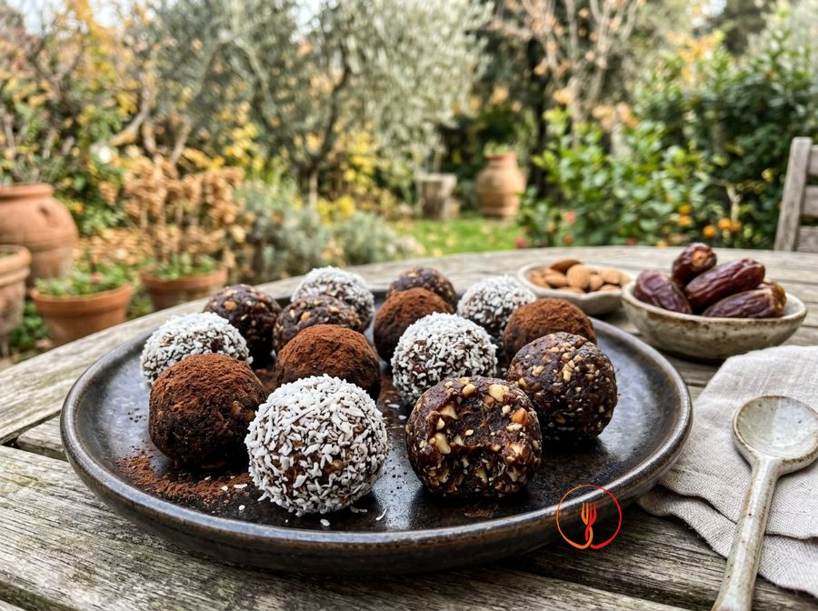

Date Energy Balls
No-bake energy balls.
These no-bake treats combine the natural sweetness of Medjool dates with the crunch of toasted almonds. The texture is dense and fudgy, enriched by a bold note of unsweetened cocoa powder.
Ingredients
- Pitted dates (Medjool variety)200 g
- Natural shelled almonds100 g
- Unsweetened cocoa powder20 g
- Shredded coconut30 g
- Warm water (optional)15 ml
- Fine salt1 g
Allergens
Tree nuts
Method
- Carefully check the dates to remove any pit fragments; if they are too dry, soak them in warm water for 10 minutes and drain thoroughly.
- Toast the almonds in a static oven at 160°C for 6-8 minutes until fragrant, then allow them to cool completely.
- Place the almonds in a food processor and pulse until they reach a fine crumble consistency, avoiding turning them into flour to keep some texture.
- Add the dates and salt to the processor and blend at high speed until the mixture begins to clump together into a sticky mass.
- Incorporate the sifted cocoa powder and blend again until the color is evenly distributed throughout the dough.
- Check the consistency: if the mixture is too crumbly and doesn't hold its shape, add warm water one teaspoon at a time until it becomes pliable.
- Divide the mixture into 12 equal portions (approx. 30 g each) and roll them between your palms to form smooth spheres.
- Place the shredded coconut in a small bowl and roll each ball in it, pressing lightly to ensure the coating adheres evenly.
- Arrange the energy balls on a tray and refrigerate for at least 30 minutes before serving to stabilize fats and flavors.
Tips
- Toast the almonds for a few minutes to release their essential oils and intense aroma.
- If the mixture is too dry, add a tablespoon of warm water to help shape the balls.
- Store the energy balls in an airtight container in the refrigerator to keep them firm.
Variations
- You can roll the balls in desiccated coconut for an exotic touch and a more elegant finish.
- Replace the almonds with walnuts for a more robust and autumnal flavor.
Nutrition facts (estimate)
| Per serving (30 g) | Per 100 g | |
|---|---|---|
| Energy | 507 kJ / 121 kcal | 1690 kJ / 405 kcal |
| Protein | 2.6 g | 8.7 g |
| Carbohydrates | 12 g | 41 g |
| of which sugars | 11 g | 36 g |
| Fat | 6.1 g | 20 g |
| of which saturates | 1.9 g | 6.3 g |
| Fibre | 3.3 g | 11 g |
| Salt | 0.1 g | 0.33 g |
AI estimates based on average CREA / USDA data: indicative only, not a substitute for medical or dietitian advice.
Open the recipe in the app for the shopping list, ingredient sheets and nearby shops.